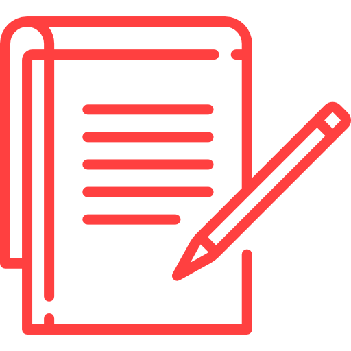

Doe sangue!
Seja um verdadeiro
HERÓI
que transforma
esperança em vida!

Mitos e verdades
As fake news existem até
na doação de sangue.
Descubra neste vídeo o
que é verdade
ou não.
Descubra se
você pode doar
Esta é a fase incial para se
tornar um herói!
Já pensou em salvar uma vida?
Seja um herói!Você Sabia?

Curiosidade nº1
Doar sangue não engrossa ou afina o
sangue isso é apenas um mito.
Passos para Doação
Seja um novo herói
Cadastre-se para ser doador
Chamada para missão
Avisaremos quando seu tipo sanguíneo estiver em falta
Você salvará uma vida!
Agende um dia para que seja realizada a doação